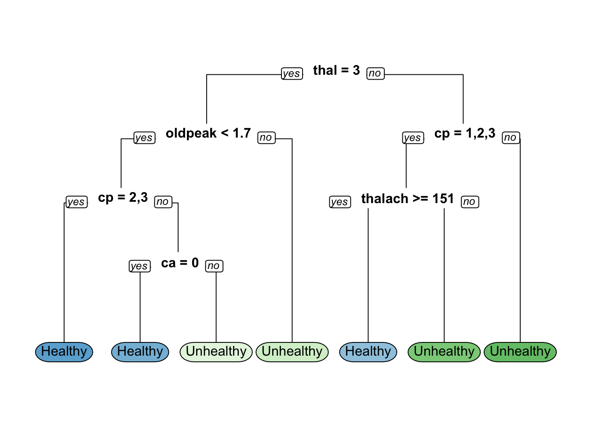
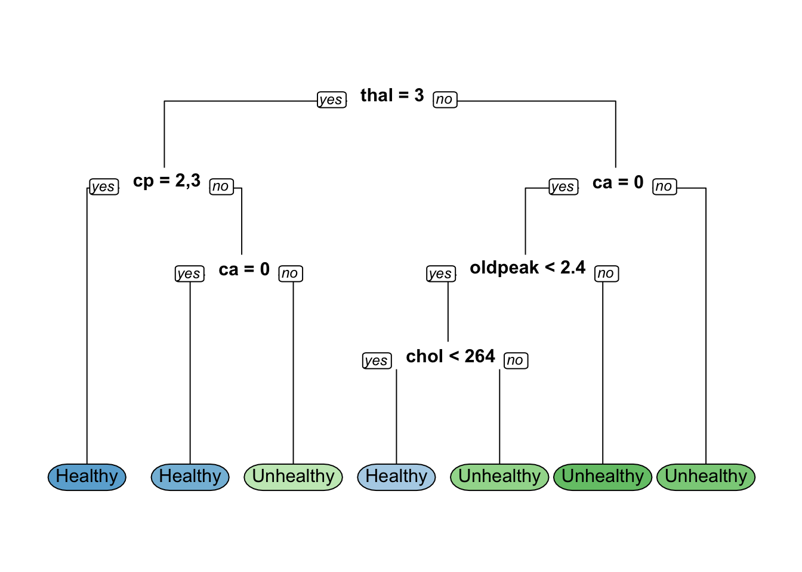
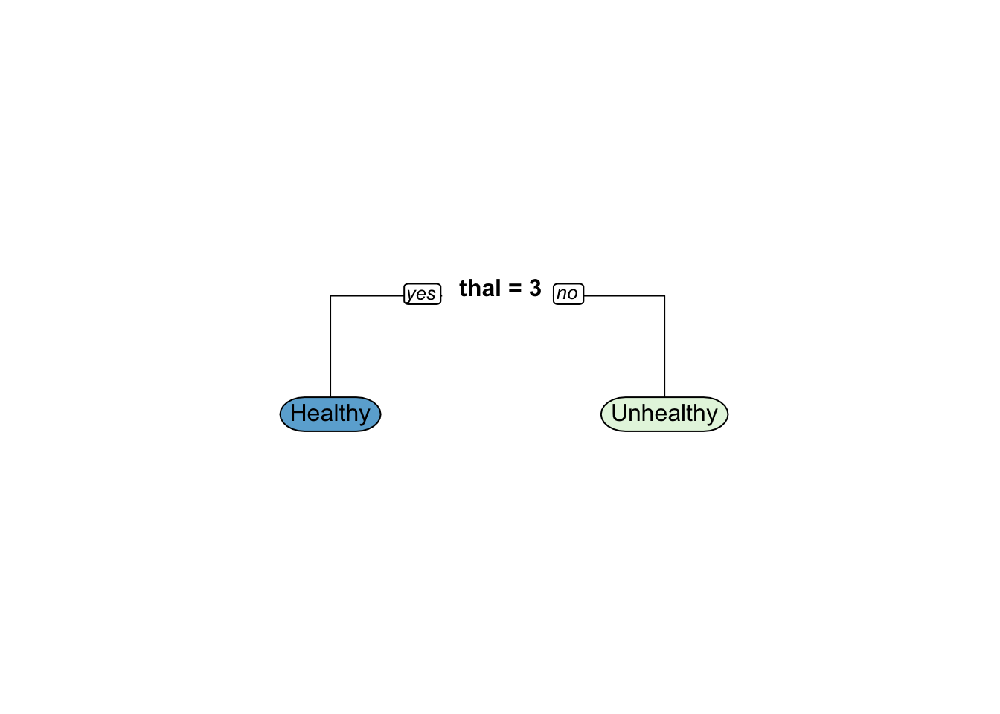
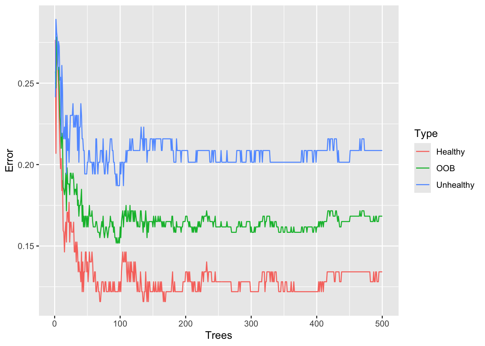
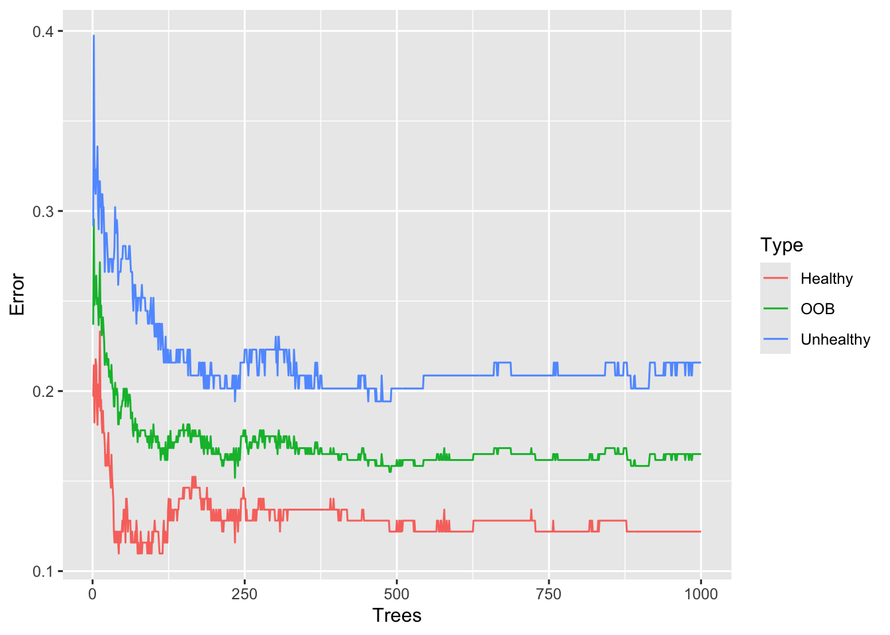
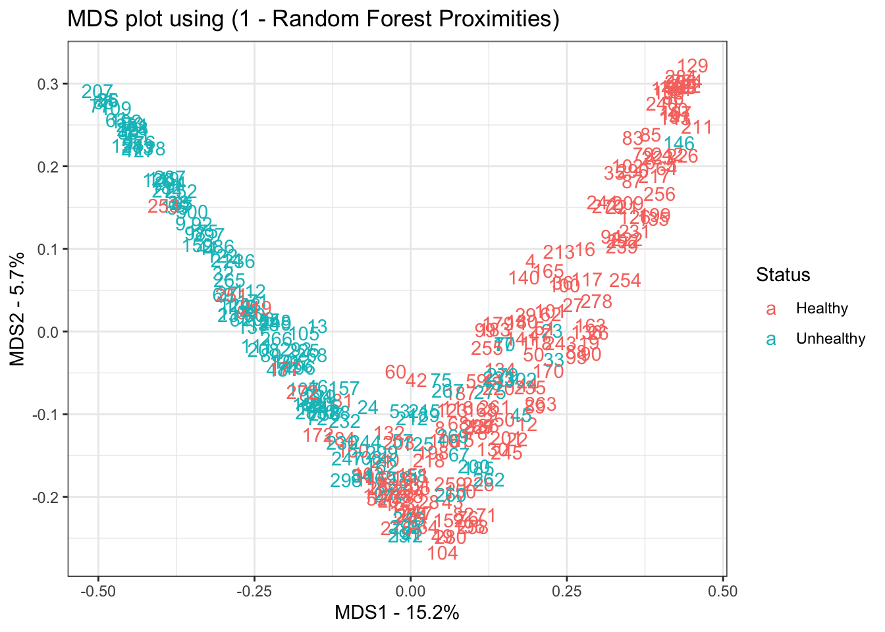

Code
suppressPackageStartupMessages({
library(ggplot2)
library(cowplot)
library(randomForest)
library(tidyverse)
library(rpart)
library(rpart.plot)
library(caret)
library(Metrics)
})suppressPackageStartupMessages({
library(ggplot2)
library(cowplot)
library(randomForest)
library(tidyverse)
library(rpart)
library(rpart.plot)
library(caret)
library(Metrics)
})Age (age)
Sex (sex)
Chest Pain Type (cp)
Resting Blood Pressure (trestbps)
Serum Cholesterol (chol)
Fasting Blood Sugar \> 120 mg/dl (fbs)
Resting Electrocardiographic Results (restecg)
Maximum Heart Rate Achieved (thalach)
Exercise Induced Angina (exang)
ST Depression Induced by Exercise Relative to Rest (oldpeak)
Slope of the Peak Exercise ST Segment (slope)
Number of Major Vessels Colored by Flourosopy (ca)
Thalassemia (thal)
Diagnosis of Heart Disease (num) (Predicted Attribute)
url <- "http://archive.ics.uci.edu/ml/machine-learning-databases/heart-disease/processed.cleveland.data"
data <- read.csv(url, header=FALSE)
head(data) V1 V2 V3 V4 V5 V6 V7 V8 V9 V10 V11 V12 V13 V14
1 63 1 1 145 233 1 2 150 0 2.3 3 0.0 6.0 0
2 67 1 4 160 286 0 2 108 1 1.5 2 3.0 3.0 2
3 67 1 4 120 229 0 2 129 1 2.6 2 2.0 7.0 1
4 37 1 3 130 250 0 0 187 0 3.5 3 0.0 3.0 0
5 41 0 2 130 204 0 2 172 0 1.4 1 0.0 3.0 0
6 56 1 2 120 236 0 0 178 0 0.8 1 0.0 3.0 0colnames(data) <- c(
"age",
"sex",# 0 = female, 1 = male
"cp", # chest pain
# 1 = typical angina,
# 2 = atypical angina,
# 3 = non-anginal pain,
# 4 = asymptomatic
"trestbps", # resting blood pressure (in mm Hg)
"chol", # serum cholestoral in mg/dl
"fbs", # fasting blood sugar if less than 120 mg/dl, 1 = TRUE, 0 = FALSE
"restecg", # resting electrocardiographic results
# 1 = normal
# 2 = having ST-T wave abnormality
# 3 = showing probable or definite left ventricular hypertrophy
"thalach", # maximum heart rate achieved
"exang", # exercise induced angina, 1 = yes, 0 = no
"oldpeak", # ST depression induced by exercise relative to rest
"slope", # the slope of the peak exercise ST segment
# 1 = upsloping
# 2 = flat
# 3 = downsloping
"ca", # number of major vessels (0-3) colored by fluoroscopy
"thal", # this is short of thalium heart scan
# 3 = normal (no cold spots)
# 6 = fixed defect (cold spots during rest and exercise)
# 7 = reversible defect (when cold spots only appear during exercise)
"hd" # (the predicted attribute) - diagnosis of heart disease
# 0 if less than or equal to 50% diameter narrowing
# 1 if greater than 50% diameter narrowing
)
head(data) age sex cp trestbps chol fbs restecg thalach exang oldpeak slope ca thal hd
1 63 1 1 145 233 1 2 150 0 2.3 3 0.0 6.0 0
2 67 1 4 160 286 0 2 108 1 1.5 2 3.0 3.0 2
3 67 1 4 120 229 0 2 129 1 2.6 2 2.0 7.0 1
4 37 1 3 130 250 0 0 187 0 3.5 3 0.0 3.0 0
5 41 0 2 130 204 0 2 172 0 1.4 1 0.0 3.0 0
6 56 1 2 120 236 0 0 178 0 0.8 1 0.0 3.0 0str(data)'data.frame': 303 obs. of 14 variables:
$ age : num 63 67 67 37 41 56 62 57 63 53 ...
$ sex : num 1 1 1 1 0 1 0 0 1 1 ...
$ cp : num 1 4 4 3 2 2 4 4 4 4 ...
$ trestbps: num 145 160 120 130 130 120 140 120 130 140 ...
$ chol : num 233 286 229 250 204 236 268 354 254 203 ...
$ fbs : num 1 0 0 0 0 0 0 0 0 1 ...
$ restecg : num 2 2 2 0 2 0 2 0 2 2 ...
$ thalach : num 150 108 129 187 172 178 160 163 147 155 ...
$ exang : num 0 1 1 0 0 0 0 1 0 1 ...
$ oldpeak : num 2.3 1.5 2.6 3.5 1.4 0.8 3.6 0.6 1.4 3.1 ...
$ slope : num 3 2 2 3 1 1 3 1 2 3 ...
$ ca : chr "0.0" "3.0" "2.0" "0.0" ...
$ thal : chr "6.0" "3.0" "7.0" "3.0" ...
$ hd : int 0 2 1 0 0 0 3 0 2 1 ...# Replace "?"s with NAs
data <- data %>%
mutate_all(~ifelse(. == "?", NA, .))
# Clean up factors and convert variables
data <- data %>%
mutate(sex = factor(ifelse(sex == 0, "F", "M")),
cp = as.factor(cp),
fbs = as.factor(fbs),
restecg = as.factor(restecg),
exang = as.factor(exang),
slope = as.factor(slope),
ca = as.factor(as.integer(ca)), # Convert to factor after converting to integer
thal = as.factor(as.integer(thal)),
hd = factor(ifelse(hd == 0, "Healthy", "Unhealthy")))
# Print structure of data
data_hd <-na.omit(data) # Data for modeling
glimpse(data_hd)Rows: 297
Columns: 14
$ age <dbl> 63, 67, 67, 37, 41, 56, 62, 57, 63, 53, 57, 56, 56, 44, 52, 5…
$ sex <fct> M, M, M, M, F, M, F, F, M, M, M, F, M, M, M, M, M, M, F, M, M…
$ cp <fct> 1, 4, 4, 3, 2, 2, 4, 4, 4, 4, 4, 2, 3, 2, 3, 3, 2, 4, 3, 2, 1…
$ trestbps <dbl> 145, 160, 120, 130, 130, 120, 140, 120, 130, 140, 140, 140, 1…
$ chol <dbl> 233, 286, 229, 250, 204, 236, 268, 354, 254, 203, 192, 294, 2…
$ fbs <fct> 1, 0, 0, 0, 0, 0, 0, 0, 0, 1, 0, 0, 1, 0, 1, 0, 0, 0, 0, 0, 0…
$ restecg <fct> 2, 2, 2, 0, 2, 0, 2, 0, 2, 2, 0, 2, 2, 0, 0, 0, 0, 0, 0, 0, 2…
$ thalach <dbl> 150, 108, 129, 187, 172, 178, 160, 163, 147, 155, 148, 153, 1…
$ exang <fct> 0, 1, 1, 0, 0, 0, 0, 1, 0, 1, 0, 0, 1, 0, 0, 0, 0, 0, 0, 0, 1…
$ oldpeak <dbl> 2.3, 1.5, 2.6, 3.5, 1.4, 0.8, 3.6, 0.6, 1.4, 3.1, 0.4, 1.3, 0…
$ slope <fct> 3, 2, 2, 3, 1, 1, 3, 1, 2, 3, 2, 2, 2, 1, 1, 1, 3, 1, 1, 1, 2…
$ ca <fct> 0, 3, 2, 0, 0, 0, 2, 0, 1, 0, 0, 0, 1, 0, 0, 0, 0, 0, 0, 0, 0…
$ thal <fct> 6, 3, 7, 3, 3, 3, 3, 3, 7, 7, 6, 3, 6, 7, 7, 3, 7, 3, 3, 3, 3…
$ hd <fct> Healthy, Unhealthy, Unhealthy, Healthy, Healthy, Healthy, Unh…# Count missing values in each column
missing_values <- colSums(is.na(data_hd))# Set seed for reproducibility
set.seed(42)
# Sample the data into training and testing sets
Z <- sample(2, nrow(data_hd), prob = c(0.8, 0.2), replace = TRUE)
hd_train <- data_hd[Z == 1, ]
hd_test <- data_hd[Z == 2, ]
# Train the rpart model
hd_model <- rpart(formula = hd ~ ., data = hd_train, method = "class")
# Visualize the decision tree
rpart.plot(hd_model, yesno = 2, type = 0,extra = 0)
hd_prediction<-predict(object = hd_model,newdata = hd_test,type = "class")
confusionMatrix(data = hd_prediction,reference = hd_test$hd)Confusion Matrix and Statistics
Reference
Prediction Healthy Unhealthy
Healthy 22 8
Unhealthy 10 18
Accuracy : 0.6897
95% CI : (0.5546, 0.8046)
No Information Rate : 0.5517
P-Value [Acc > NIR] : 0.02259
Kappa : 0.3771
Mcnemar's Test P-Value : 0.81366
Sensitivity : 0.6875
Specificity : 0.6923
Pos Pred Value : 0.7333
Neg Pred Value : 0.6429
Prevalence : 0.5517
Detection Rate : 0.3793
Detection Prevalence : 0.5172
Balanced Accuracy : 0.6899
'Positive' Class : Healthy
accuracy(actual = hd_prediction,hd_test$hd)[1] 0.6896552## Tree splitting criteria based comparison
# Model training based on gini-based splitting criteria
hd_mode11 <- rpart(formula = hd~.,data = hd_train,method = "class",
parms = list(split = "gini"))
# Model training based o] information gain-based splitting criteria
hd_model2 <- rpart(formula = hd~.,
data = hd_train,
method = "class",
parms = list (split = "information"))
# Generate class predictions on the test data using gini-based splitting criteria
pred1 <- predict(object = hd_mode11,
newdata = hd_test,type = "class")
confusionMatrix(data = pred1,reference = hd_test$hd)Confusion Matrix and Statistics
Reference
Prediction Healthy Unhealthy
Healthy 22 8
Unhealthy 10 18
Accuracy : 0.6897
95% CI : (0.5546, 0.8046)
No Information Rate : 0.5517
P-Value [Acc > NIR] : 0.02259
Kappa : 0.3771
Mcnemar's Test P-Value : 0.81366
Sensitivity : 0.6875
Specificity : 0.6923
Pos Pred Value : 0.7333
Neg Pred Value : 0.6429
Prevalence : 0.5517
Detection Rate : 0.3793
Detection Prevalence : 0.5172
Balanced Accuracy : 0.6899
'Positive' Class : Healthy
accuracy(actual = pred1,hd_test$hd)[1] 0.6896552rpart.plot(hd_mode11, yesno = 2, type = 0,extra = 0)pred2 <- predict(object = hd_model2,
newdata = hd_test,type = "class")
confusionMatrix(data = pred2,reference = hd_test$hd)Confusion Matrix and Statistics
Reference
Prediction Healthy Unhealthy
Healthy 25 6
Unhealthy 7 20
Accuracy : 0.7759
95% CI : (0.6473, 0.8749)
No Information Rate : 0.5517
P-Value [Acc > NIR] : 0.0003327
Kappa : 0.5485
Mcnemar's Test P-Value : 1.0000000
Sensitivity : 0.7812
Specificity : 0.7692
Pos Pred Value : 0.8065
Neg Pred Value : 0.7407
Prevalence : 0.5517
Detection Rate : 0.4310
Detection Prevalence : 0.5345
Balanced Accuracy : 0.7752
'Positive' Class : Healthy
accuracy(actual = pred2,hd_test$hd)[1] 0.7758621rpart.plot(hd_model2, yesno = 2, type = 0,extra = 0)
# Plot the Complexity Parameter (CP) Table
printcp(hd_mode11)
Classification tree:
rpart(formula = hd ~ ., data = hd_train, method = "class", parms = list(split = "gini"))
Variables actually used in tree construction:
[1] ca cp oldpeak thal thalach
Root node error: 111/239 = 0.46444
n= 239
CP nsplit rel error xerror xstd
1 0.504505 0 1.00000 1.00000 0.069462
2 0.063063 1 0.49550 0.68468 0.064860
3 0.040541 2 0.43243 0.59459 0.062269
4 0.022523 4 0.35135 0.54955 0.060723
5 0.010000 6 0.30631 0.52252 0.059708# Retrieve the index of the optimal CP value based on cross-validated error
index <- which.min(hd_mode11$cptable[, "xerror"])
# Retrieve the optimal CP value
cp_optimal <- hd_mode11$cptable[index, "CP"]
# Prune the tree based on the optimal CP value
hd_mode11_opt <- prune(tree = hd_mode11, cp = cp_optimal)
hd_mode11_optn= 239
node), split, n, loss, yval, (yprob)
* denotes terminal node
1) root 239 111 Healthy (0.53556485 0.46443515)
2) thal=3 135 31 Healthy (0.77037037 0.22962963)
4) oldpeak< 1.7 120 20 Healthy (0.83333333 0.16666667)
8) cp=2,3 76 5 Healthy (0.93421053 0.06578947) *
9) cp=1,4 44 15 Healthy (0.65909091 0.34090909)
18) ca=0 31 6 Healthy (0.80645161 0.19354839) *
19) ca=1,2 13 4 Unhealthy (0.30769231 0.69230769) *
5) oldpeak>=1.7 15 4 Unhealthy (0.26666667 0.73333333) *
3) thal=6,7 104 24 Unhealthy (0.23076923 0.76923077)
6) cp=1,2,3 29 14 Healthy (0.51724138 0.48275862)
12) thalach>=150.5 15 3 Healthy (0.80000000 0.20000000) *
13) thalach< 150.5 14 3 Unhealthy (0.21428571 0.78571429) *
7) cp=4 75 9 Unhealthy (0.12000000 0.88000000) *## plot optimal model
pred3 <- predict(object = hd_mode11_opt,
newdata = hd_test,type = "class")
confusionMatrix(data = pred1,reference = hd_test$hd)Confusion Matrix and Statistics
Reference
Prediction Healthy Unhealthy
Healthy 22 8
Unhealthy 10 18
Accuracy : 0.6897
95% CI : (0.5546, 0.8046)
No Information Rate : 0.5517
P-Value [Acc > NIR] : 0.02259
Kappa : 0.3771
Mcnemar's Test P-Value : 0.81366
Sensitivity : 0.6875
Specificity : 0.6923
Pos Pred Value : 0.7333
Neg Pred Value : 0.6429
Prevalence : 0.5517
Detection Rate : 0.3793
Detection Prevalence : 0.5172
Balanced Accuracy : 0.6899
'Positive' Class : Healthy
accuracy(actual = pred1,hd_test$hd)[1] 0.6896552rpart.plot(hd_mode11_opt, yesno = 2, type = 0,extra = 0)
## the minimum number of observations that must exist in a node in order for a split 1
## Set the maximum depth of any node of the final tree
minsplit <- seq(1, 20, 1)
maxdepth <- seq(1, 20, 1)
# Generate a search grid
hyperparam_grid <- expand.grid(minsplit = minsplit, maxdepth = maxdepth)
number_models= nrow(hyperparam_grid)
# create an empty list
hd_modelling <- list()
## write a loop to save the models
for(i in 1:number_models ){
minsplit <- hyperparam_grid$minsplit[i]
maxdepth <- hyperparam_grid$maxdepth[i]
hd_modelling[[i]]<-rpart(formula = hd ~ ., data = hd_train,
method = "class",
minsplit = minsplit,
maxdepth = maxdepth)
}
num_models <- length(hd_modelling)
# Create an empty vector to store accuracy values
accuracy_values <- c()
# Use for loop for models accuracy estimation
for (i in 1: num_models) {
# Retrieve the model i from the list
model_heartd <- hd_modelling[[i]]
hd_prediction1<-predict(object = model_heartd,newdata = hd_test,type = "class")
accuracy_values[[i]] <-accuracy(actual = hd_prediction1,hd_test$hd)
}
# Identify the index of the model with maximum accuracy
best_model_index <- which.max(accuracy_values)
# Retrieve the best model
best_model <- hd_modelling[[best_model_index]]
# Print the model hyperparameters of the best model
best_model$control$minsplit
[1] 1
$minbucket
[1] 0
$cp
[1] 0.01
$maxcompete
[1] 4
$maxsurrogate
[1] 5
$usesurrogate
[1] 2
$surrogatestyle
[1] 0
$maxdepth
[1] 1
$xval
[1] 10# Calculate accuracy of the best model on test data
pred <- predict(object = best_model, newdata = hd_test, type = "class")
accuracy(actual = hd_test$hd, predicted = pred)[1] 0.7413793# Plot the best model
rpart.plot(best_model, yesno = 2, type = 0, extra = 0)
“train” dataset is the bootstrapped data
“test” dataset is the remaining samples (the “Out-Of-Bag” (OOB) data.)
when we set iter=6, OOB-error bounces around between 17% and 18%. by Breiman
set.seed(42)
## impute any missing values in the training set using proximities
data.imputed <- rfImpute(hd ~ ., data = data, iter=6)ntree OOB 1 2
300: 17.49% 12.80% 23.02%
ntree OOB 1 2
300: 16.83% 14.02% 20.14%
ntree OOB 1 2
300: 17.82% 13.41% 23.02%
ntree OOB 1 2
300: 17.49% 14.02% 21.58%
ntree OOB 1 2
300: 17.16% 12.80% 22.30%
ntree OOB 1 2
300: 18.15% 14.63% 22.30%model <- randomForest(hd ~ ., data=data.imputed, proximity=TRUE)
model
Call:
randomForest(formula = hd ~ ., data = data.imputed, proximity = TRUE)
Type of random forest: classification
Number of trees: 500
No. of variables tried at each split: 3
OOB estimate of error rate: 16.83%
Confusion matrix:
Healthy Unhealthy class.error
Healthy 142 22 0.1341463
Unhealthy 29 110 0.2086331oob.error.data <- data.frame(
Trees=rep(1:nrow(model$err.rate), times=3),
Type=rep(c("OOB", "Healthy", "Unhealthy"), each=nrow(model$err.rate)),
Error=c(model$err.rate[,"OOB"],
model$err.rate[,"Healthy"],
model$err.rate[,"Unhealthy"]))
ggplot(data=oob.error.data, aes(x=Trees, y=Error)) +
geom_line(aes(color=Type))
# ggsave("oob_error_rate_500_trees.pdf")set.seed(42)
model_100 <- randomForest(hd ~ ., data=data.imputed, ntree=1000, proximity=TRUE)
model_100
Call:
randomForest(formula = hd ~ ., data = data.imputed, ntree = 1000, proximity = TRUE)
Type of random forest: classification
Number of trees: 1000
No. of variables tried at each split: 3
OOB estimate of error rate: 16.5%
Confusion matrix:
Healthy Unhealthy class.error
Healthy 144 20 0.1219512
Unhealthy 30 109 0.2158273oob.error.data <- data.frame(
Trees=rep(1:nrow(model_100$err.rate), times=3),
Type=rep(c("OOB", "Healthy", "Unhealthy"), each=nrow(model_100$err.rate)),
Error=c(model_100$err.rate[,"OOB"],
model_100$err.rate[,"Healthy"],
model_100$err.rate[,"Unhealthy"]))
ggplot(data=oob.error.data, aes(x=Trees, y=Error)) +
geom_line(aes(color=Type))
# ggsave("oob_error_rate_1000_trees.pdf")After building a random forest with 1,000 trees, we get the same OOB-error 16.5% and we can see convergence in the graph. So we could have gotten away with only 500 trees, but we wouldn’t have been sure that number was enough.
set.seed(42)
## If we want to compare this random forest to others with different values for
## mtry (to control how many variables are considered at each step)...
oob.values <- vector(length=10)
for(i in 1:10) {
temp.model <- randomForest(hd ~ ., data=data.imputed, mtry=i, ntree=1000)
oob.values[i] <- temp.model$err.rate[nrow(temp.model$err.rate),1]
}
oob.values [1] 0.1749175 0.1749175 0.1716172 0.1815182 0.1815182 0.1815182 0.1782178
[8] 0.1881188 0.1848185 0.1980198## find the minimum error
min(oob.values)[1] 0.1716172## find the optimal value for mtry...
which(oob.values == min(oob.values))[1] 3set.seed(42)
## create a model for proximities using the best value for mtry
model <- randomForest(hd ~ .,
data=data.imputed,
ntree=1000,
proximity=TRUE,
mtry=which(oob.values == min(oob.values)))
## Start by converting the proximity matrix into a distance matrix.
distance.matrix <- as.dist(1-model$proximity)
mds.stuff <- cmdscale(distance.matrix, eig=TRUE, x.ret=TRUE)
## calculate the percentage of variation that each MDS axis accounts for...
mds.var.per <- round(mds.stuff$eig/sum(mds.stuff$eig)*100, 1)
## now make a fancy looking plot that shows the MDS axes and the variation:
mds.values <- mds.stuff$points
mds.data <- data.frame(Sample=rownames(mds.values),
X=mds.values[,1],
Y=mds.values[,2],
Status=data.imputed$hd)
ggplot(data=mds.data, aes(x=X, y=Y, label=Sample)) +
geom_text(aes(color=Status)) +
theme_bw() +
xlab(paste("MDS1 - ", mds.var.per[1], "%", sep="")) +
ylab(paste("MDS2 - ", mds.var.per[2], "%", sep="")) +
ggtitle("MDS plot using (1 - Random Forest Proximities)")
# ggsave(file="random_forest_mds_plot.pdf")